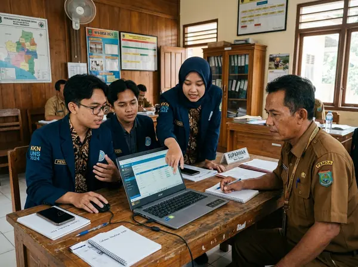
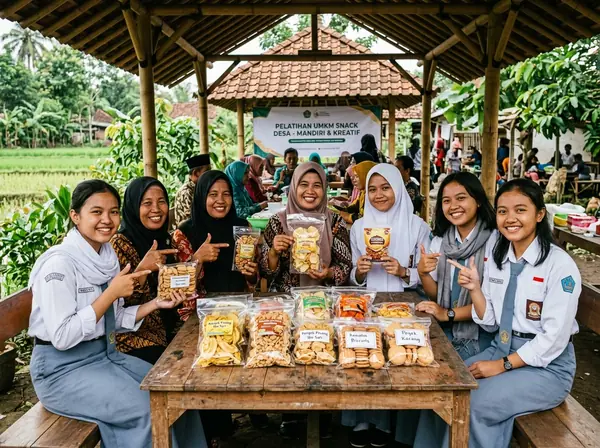

PLK UNY Mengabdi
Pengabdian Mahasiswa di Kalurahan Trimurti, Srandakan, Bantul
Sepuluh mahasiswa Universitas Negeri Yogyakarta mendampingi warga dan pamong kalurahan pada bidang teknologi informasi, pendidikan sekolah, ketahanan keluarga, dan usaha warga di Kalurahan Trimurti, Kapanewon Srandakan, Bantul.
Peta Lokasi & Titik Penempatan Kalurahan Trimurti
Berpusat di Kalurahan Trimurti, Kapanewon Srandakan, Kabupaten Bantul.
Kerja Bersama untuk Kemandirian Warga Trimurti
PLK UNY Mengabdi adalah wahana pengabdian aplikatif mahasiswa Universitas Negeri Yogyakarta untuk menghubungkan keilmuan akademis dengan kebutuhan nyata masyarakat pedesaan.
Di Kalurahan Trimurti, sepuluh mahasiswa dari empat disiplin ilmu (Teknologi Informasi, Pendidikan Teknik Informatika, Bimbingan dan Konseling, serta Pendidikan Bahasa Inggris) bekerja bahu-membahu bersama pamong kalurahan, kader posyandu, Karang Taruna, dan pengelola UMKM dalam penataan arsip dan pelayanan desa yang mandiri.

Empat Pilar Program Pengabdian
Literasi Digital & Belajar Kreatif
Pelatihan dasar aplikasi perkantoran, media ajar interaktif, dan pendampingan bimbel kreatif bagi pelajar pedukuhan.
- Modul visual praktis komputer dasar
- Bimbel menyenangkan siswa SD-SMP
Konservasi & Edukasi Organik
Penanaman bibit pohon produktif bersama kelompok tani dan edukasi pemilahan sampah organik rumah tangga.
- Penanaman 200 bibit tanaman pelindung
- Pengelolaan kompos rumah tangga mandiri

Digitalisasi Sistem Informasi Kalurahan
Pembaruan data kependudukan digital, tata arsip elektronik pamong, dan peta web interaktif kalurahan.
- Validasi dan digitalisasi profil potensi
- Panduan teknis pemeliharaan perangkat desa

Branding UMKM & Publikasi Dwibahasa
Pendampingan kemasan produk pangan lokal, pendaftaran titik Google Maps, serta kurasi katalog promosi dwibahasa.
- Redesain label kemasan produk olahan
- Pendaftaran titik usaha di peta digital
Arsip Dokumentasi Kegiatan
Momen interaksi, musyawarah bersama pamong, implementasi program kerja, dan kebersamaan warga di Kalurahan Trimurti.
Sepuluh Mahasiswa Pengabdi
Kolaborasi lintas 4 program studi Universitas Negeri Yogyakarta untuk mendampingi Kalurahan Trimurti, Srandakan.